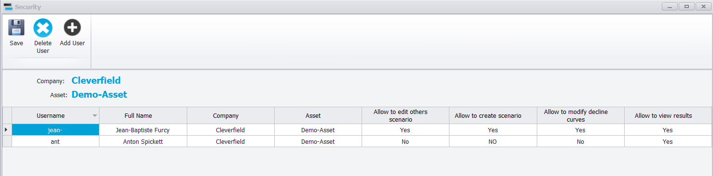

|
Security and access policy
1. Three levels of control
•Licence: who can start Precept at all, and who is a Super User. This is set by Cleverfield (see Installation).
•Asset access and permissions: which assets a user sees, and what they may do in them. This is set in the "Security" window (sections 2 to 4).
•Scenario sharing and status: whether other users see a scenario, and whether it can still be edited. This is set in the Scenario Manager (section 5).
A Super User can see every asset of the company, open the "Security" window, list the scenarios of other users in the Scenario Manager ("View All scenarios"), delete them, and change their sharing and status. The ribbon restrictions of section 4 do not apply to a Super User.
2. Opening the Security window
1.Select the asset in the "Select Asset" list of the main window.
2.Click "Security" on the main ribbon. The button is active for Super Users only.
The window shows the "Company:" and "Asset:" at the top, and one row per user who has access to this asset.

3. Access to an asset
A user who is not a Super User sees an asset in the "Select Asset" list only when they have a row in the "Security" window of that asset. When an asset is created, its creator is added automatically, with every permission set to "Yes".
To give a user access:
1.Click "Add User". A new row appears, with the four permissions set to "Yes".
2.In the "Full Name" cell, pick the user from the list. Only users who hold a Precept licence for your company are listed.
3.Set each permission to "Yes" or "No" (section 4). Any other value is refused.
4.Click "Save". The message "Access for the Asset ... have been succesfully saved !" confirms the change.
To remove a user, select the full row (click the row header) and click "Delete User", then "Save". At least one user must keep access to the asset. The "Company", "Asset" and "Full Name" columns are read-only. You can copy and paste permission cells with Ctrl+C and Ctrl+V. "Add User", "Delete User" and "Save" are active for Super Users and for the user who created the asset.
4. Permissions within an asset
|
Column
|
When set to "No"
|
|
Allow to edit others scenario
|
On a scenario created by someone else, the "Forecast" and "GAP" ribbon groups are disabled: the user can open the inputs and view the results but cannot run a forecast. The editing commands of the Network, Opportunities, Shutdowns and Settings windows are also disabled for this user.
|
|
Allow to create scenario
|
The "Manager" ribbon group ("Scenario Manager", "Duplicate scenario") is disabled.
|
|
Allow to modify decline curves
|
The "Decline Curves" button is disabled.
|
|
Allow to view results
|
The "Forecast Results" ribbon group (charts, maps, export, dashboards, reports) is disabled.
|
Example: user "Analyst B" must only look at, and export to Excel, the forecasts of asset "Field A". Give them "Allow to view results" = "Yes" and the three other permissions = "No". Their colleague who builds the forecasts keeps all four permissions at "Yes".
5. Scenario sharing and locking
Within an asset, each scenario is either private or shared, and either "Working" or "Locked". Only the scenario's creator (or a Super User) can change this, from the Scenario Manager (see Scenario Management):
•A scenario that is not shared appears only in its creator's "Scenario:" list. Super Users can also list it in the Scenario Manager by choosing "View All scenarios", to delete it or change its sharing and status.
•A shared scenario is visible to every user of the asset. Whether they can run it depends on their "Allow to edit others scenario" permission.
•When a scenario is "Locked", Precept shows "This scenario is locked and cannot be edited !" when it is opened. The "Expertise", "Forecast" and "GAP" groups are disabled for everyone, including its creator; only the results can be viewed and exported. Set the status back to "Working" to edit it again.
6. Other tools in the Security window
"Execute Query" opens a window that runs a database query typed by the user and reports the "number of affected rows:". It changes data directly in the Precept database, without the checks of the normal windows: use it only when instructed by Cleverfield support.
|